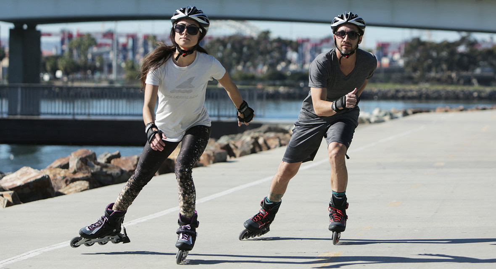
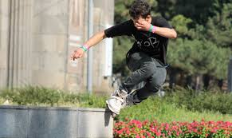
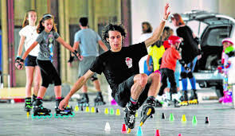
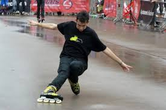
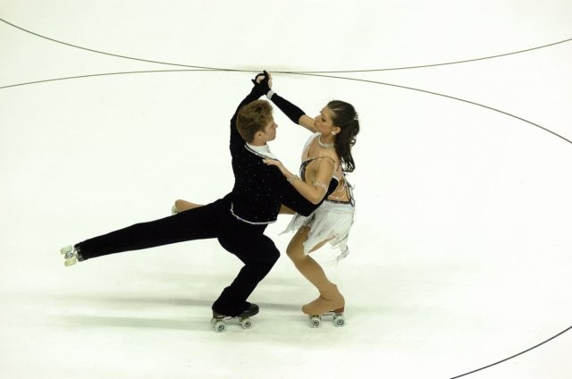

DISIPLINAS DEL PATINAJE
| NOMBRE | DESCRIPCIÓN | IMAGEN |
|---|
| Patinaje estándar |
No desarrolla específicamente una disciplina en concreto. Pero, que sea general,
no significa que sea básico, podrás aprender desde nivel cero a nivel avanzado. técnica general como:
Caídas, impulsos, giros, frenadas, patinaje de espalda, saltos, patinaje a un pie, patinaje a dos ruedas, patinaje a una rueda.
http://madrid.clubtres60.com/clases/como-son/disciplinas-patinaje/ |
 |
| Freeride |
Tiene como objetivo formar patinadores capaces de patinar en cualquier situación, diferentes terrenos, cuestas,
rampas, escalones, desniveles, saltos, derrapes. Se trata de un patinaje urbano, donde los elemento de la ciudad adquieren otra perspectiva,
se aprovecha la calle para disfrutar. http://madrid.clubtres60.com/clases/como-son/disciplinas-patinaje/ |
 |
| Freestyle Slalom |
Es una modalidad muy técnica que actualmente está de moda, consiste en realizar diferentes trucos a lo largo de filas de conos situados
a diferentes distancias (120cm, 80cm y 50cm). En esta disciplina se utiliza una configuración especial en las ruedas denominada rockering,
consiste en disponer de mayor tamaño a las dos ruedas centrales de los patines de manera que la superficie que apoya se reduce para facilitar
la velocidad y ejecución de los movimientos. http://madrid.clubtres60.com/clases/como-son/disciplinas-patinaje/ |
 |
| Frenadas y Derrapes |
Esta modalidad se centra en la tecnica de las frenadas y los derrapes, ambas tienen como objetivo detener la velocidad de avance,
la diferencia es en el ángulo de inclinación entre el suelo y el patín. Derrapa si el ángulo que formas es agudo a favor del movimiento,
será una frenada y si es obtuso en contra del movimiento. http://madrid.clubtres60.com/clases/como-son/disciplinas-patinaje/ |
 |
| Patinaje Artístico |
Combina elementos técnicos del patinaje con facetas artísticas, realizando piruetas, giros, saltos y acrobacias al compás de la música.
Esta rama del patinaje conjuga la técnica en: Fuerza, elasticidad, control del cuerpo, precisión, velocidad, seguridad, calidad y variedad de las dificultades.
Es el arte de La armonización de los movimientos con la música, en tiempo, ritmo y carácter, el vestuario, la danza. http://madrid.clubtres60.com/clases/como-son/disciplinas-patinaje/ |
 |